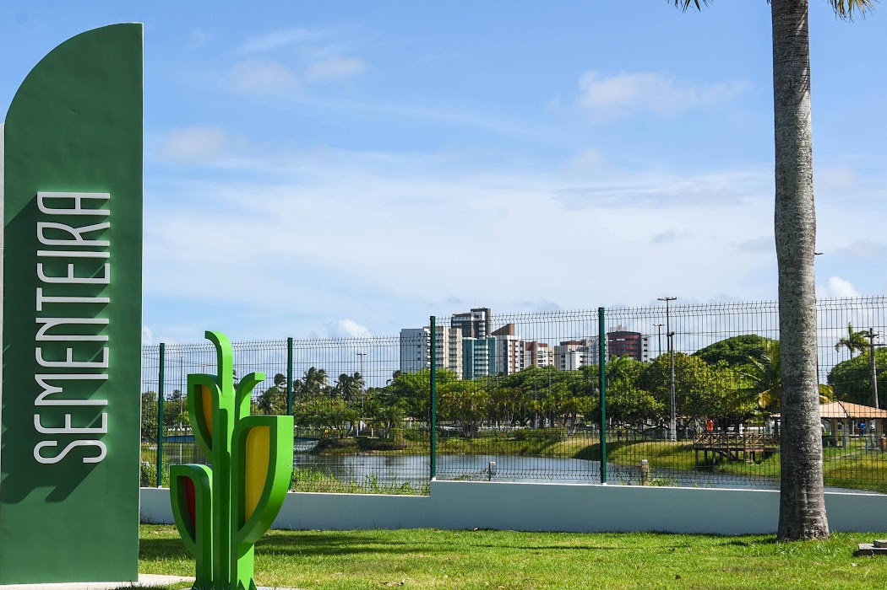

Sementeira

O parque pode ser utilizado pelos aracajuanos e turistas para prática de atividades esportivas e de lazer, pesquisas ambientais além de outras atividades em contato com a natureza. O espaço conta com parque infantil, campo de futebol quadra poliesportiva, espaço com aparelhos para exercícios físicos, pista para caminhada, quiosques para piqueniques, sanitários, lagos, e iluminação adequada.
Atrativos da Sementeira
- Atividades físicas no parque
- Caminhadas ao ar livre
- Reuniões em familía
- Piqueniques